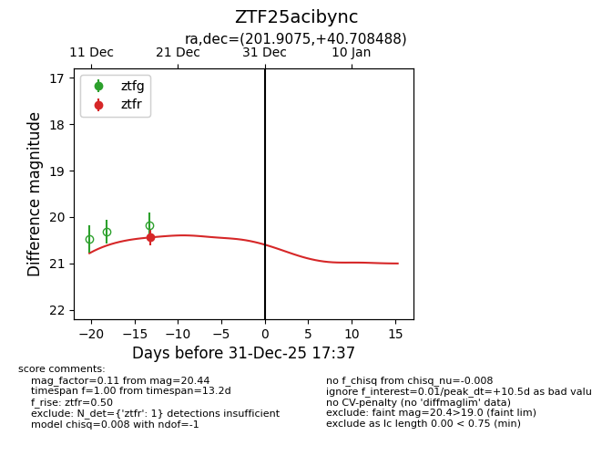
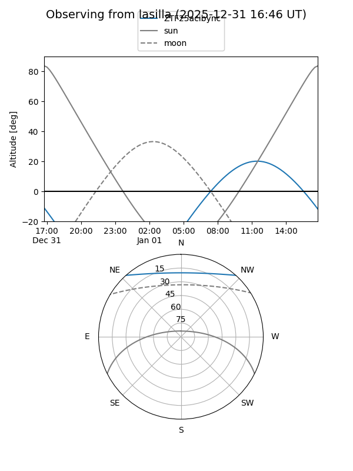
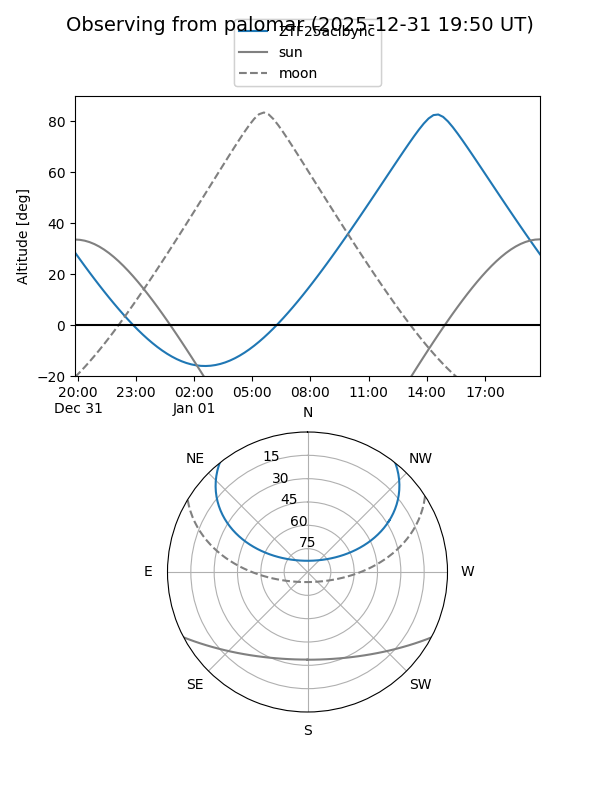
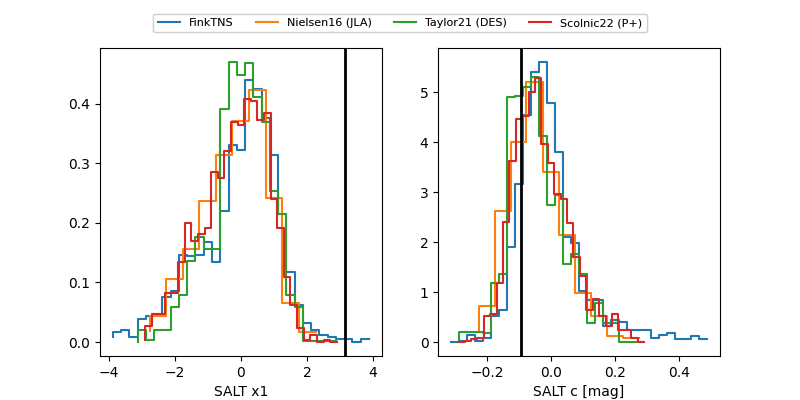

ZTF25acibync
Target ZTF25acibync at 2025-12-31 18:00
Aliases and brokers:
FINK: link
Lasair: link
ALeRCE: link
alt names
ZTF25acibync (ztf,fink_ztf)
Coordinates:
equatorial (ra, dec) = 201.9075,+40.70849
equatorial (HMS+DMS) = 13:27:37.81,+40:42:30.56
galactic (l, b) = (96.4326,+74.50361)
Flags:
Photometry:
last ztfr=20.44
1 ztfr detections
Lightcurve

Visibility


Additional plots
